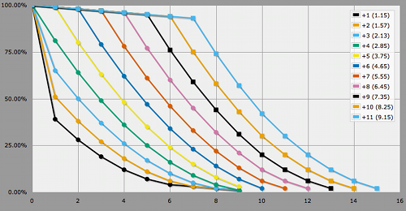
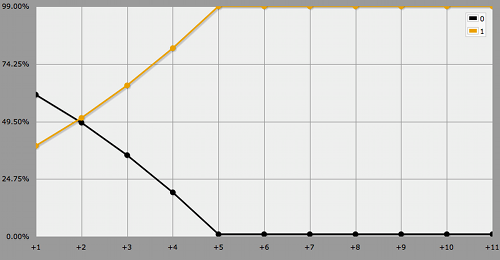

Qin
Yin Yang Dice
A while ago someone chatted with me about the dice mechanic of Qin: the Warring States. Though I have no firsthand experience with the game, I believe this is how it works.
You roll two ten-sided dice, counting the 10s as 0s. If they roll equal, you've achieved balance and automatically succeed with a margin set to whatever the dice rolled. If you rolled double zero, however, you fail. So there's always at least a 1% chance of failure and at least a 9% chance to succeed with a margin between one and nine.
When the dice roll different, you subtract the lower from the higher and add your character's Aspect and Skill. Then you subtract some target number from that to end up with your margin of success, or simply failure if the result is less than one. Aspects range from one to five, while Skills range from zero to six.
What are the Odds?
Let's ask AnyDice what the odds are versus a target value of 5, for all possible aspect plus skill values. Here's one way to do that.
function: qin MODIFIER vs TARGET {
result: [roll 2d{0..9}]
}
function: roll YY:s {
if 1@YY = 2@YY { result: 1@YY }
result: [highest of 0 and 1@YY - 2@YY + MODIFIER - TARGET]
}
loop ASPECTSKILL over {1..11} {
output [qin ASPECTSKILL vs 5] named "+[ASPECTSKILL]"
}
And here are the results, showing margin of success, using the at-least graph view. It kinda looks like a "balance achieved" stick from which "aspect plus skill" threads hang.

In case you're only interested in succeeding and don't care for the marging, a slight adjustment in the code is all that is needed. In this case the transposed view is most useful.
loop ASPECTSKILL over {1..11} {
output [qin ASPECTSKILL vs 5] > 0 named "+[ASPECTSKILL]"
}

It's always fun learning about new games and dice mechanics and helping people figure out the odds. So don't hesitate to start a chat if you catch me online!